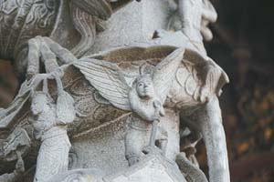
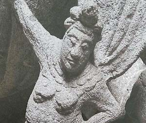

祖師廟尋邱比特、美人魚 送好禮
劉宛琳｜聯合報／新北市．運動∣2015年3月30日
 已故畫家李梅樹主持三峽祖師廟重建工程36年，結合民俗與學院精神，將祖師廟打造成融合東西文化的獨特廟宇，因而有「東方藝術殿堂」美譽。
即日起至4月26日，只要在祖師廟找到愛神邱比特和美人魚石雕作品，並打卡拍照上傳臉書，上李梅樹紀念館粉絲專業按讚，就可以到李梅樹紀念館領取神祕小禮物。
已故畫家李梅樹主持三峽祖師廟重建工程36年，結合民俗與學院精神，將祖師廟打造成融合東西文化的獨特廟宇，因而有「東方藝術殿堂」美譽。
即日起至4月26日，只要在祖師廟找到愛神邱比特和美人魚石雕作品，並打卡拍照上傳臉書，上李梅樹紀念館粉絲專業按讚，就可以到李梅樹紀念館領取神祕小禮物。